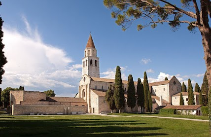
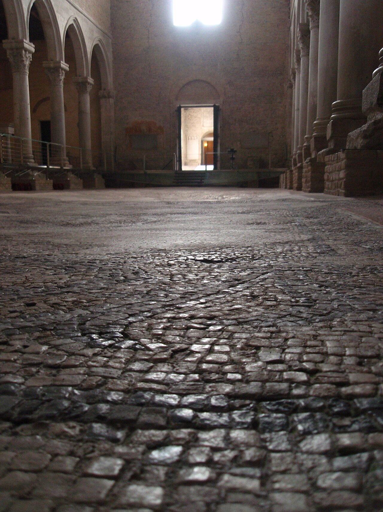
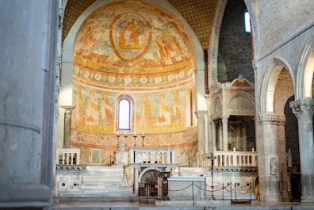
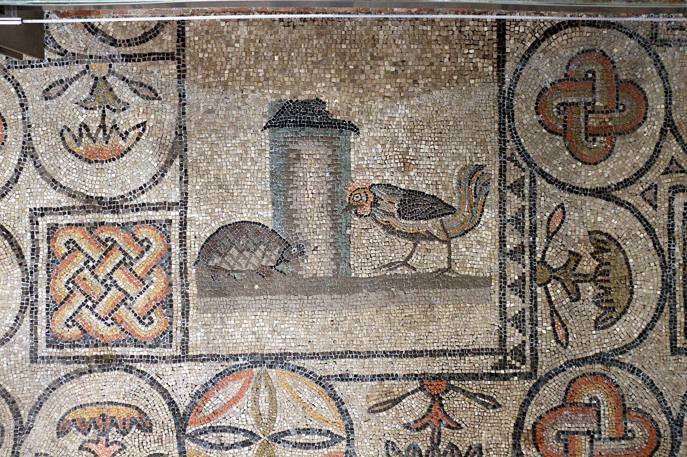
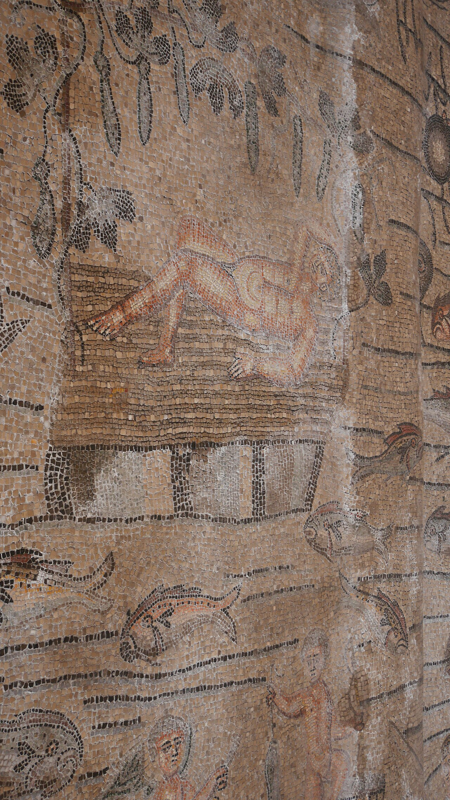
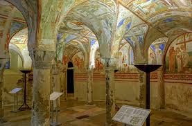

實景走讀圖輯：外觀、中殿立體空間與代表性馬賽克
整合在地寫真與 Wikimedia Commons 高解析官方典藏檔案

外觀建築主殿外觀與 73 米獨立鐘樓
Exterior & Campanile
波波主教於 11 世紀建成的 73 公尺防禦型獨立鐘樓，建材大量取自古羅馬圓形劇場與公共遺構，聳立於弗留利平原。

中殿全景三廊式中殿與威尼斯船底木頂
Nave & Keel Ceiling
中殿上方是 14 世紀威尼斯造船匠打造的船龍骨倒扣天花；地坪鋪設懸空玻璃步道保護下方的 4 世紀巨幅馬賽克。

半圓後殿 (Apse)半圓後殿壁畫與大理石主祭壇
Apse Fresco & Altar
圓頂描繪聖母子登座，兩側環繞殉道聖人與康拉德二世家族及波波宗主教供養人肖像，下飾哥德式雕花欄杆。

核心馬賽克公雞與烏龜之搏鬥特寫
Cock vs. Tortoise Mosaic
聖殿最著名特寫！公雞象徵黎明警醒與基督真光，烏龜象徵幽暗深淵與沉淪，呈現早期信徒深刻的靈性交戰。

救贖巨構約拿被海怪吞吐之神蹟
Jonah Cycle Mosaic
海怪（Kētos）將約拿吐出，是早期教會用來隱喻「基督死後三日復活」最重要的圖案，四周滿布亞得里亞海魚蝦。

壁畫地宮 (Crypt)12 世紀壁畫地宮穹頂拱券
Cripta degli Affreschi
位於主祭壇地底，十字拱頂鋪滿色彩鮮明的拜占庭-羅曼風格壁畫，細述宗徒聖馬可與聖埃爾馬戈拉之殉道傳奇。
教堂屬於哪種建築風格？
阿奎萊亞聖殿並非單一時期的產物，而是一座「以4世紀早期基督教雙巴西利卡為底蘊、11世紀羅曼式（Romanesque）為主體骨架、融合14世紀哥德式船底木頂」的複合式疊代聖殿。
1. 巴西利卡式布局
Basilica Plan (4世紀起)
沿用古羅馬公共集會巴西利卡平面。三廊式（寬廣中殿 Nave + 雙側廊 Aisles），筆直通往半圓形後殿（Apse），象徵信徒邁向神聖與永生的救贖朝聖軸線。
2. 羅曼式主體結構
Romanesque (1031年獻堂)
由波波宗主教（Patriarch Poppo）主持大重建。厚重堅固的石砌牆身、質樸的立面圓拱門廊與採光雙窗、高達73公尺的獨立防禦型鐘樓，展現北義羅曼式雄渾純樸的特質。
3. 威尼斯哥德式屋頂
Ship's Keel Roof (1348年震後)
1348 年大地震後修復，由威尼斯造船工匠主導建造「船龍骨狀木桁架天花（Carena di nave）」與中殿哥德尖拱柱廊，將亞得里亞海航海基因無縫融入古老石堂中。
獨一無二的「雙巴西利卡（Doppia Basilica）」概念
4世紀特奧多羅（Theodore）主教在此設計了平行的南北兩座長方形會堂（一堂作為洗禮講道堂，一堂作為聖餐崇拜堂）。現在站立的主殿是在南堂基址上擴建；走道鋪設高架懸空鋼構玻璃，可直透腳下沉睡的地層。
歷史興衰：從羅馬第四大城到宗主教聖座
阿奎萊亞曾是古羅馬帝國義大利本土僅次於羅馬、米蘭、卡普阿的第四大都會，被譽為「第二個羅馬（Roma Secunda）」。它不僅是帝國向多瑙河與巴爾幹擴張的兵要與樞紐，更是基督教在歐洲東北部與斯拉夫民族間傳播的核心心臟。
古羅馬前哨殖民堡壘建立
羅馬共和國在此建城以防禦伊利里亞及高盧部落，隨後因坐擁河港直通亞得里亞海，迅速發展成坐擁十萬人口、匯聚商旅琥珀貿易的帝國超級都會。
米蘭敕令與初代聖殿落成
君士坦丁大帝頒布《米蘭敕令》合法化基督教後，特奧多羅主教第一時間動工興建，鋪設了壯麗的馬賽克地坪，成為基督教公開信仰的最早實體見證之一。
匈人王阿提拉（Attila）洗劫焚城
阿提拉大軍攻陷阿奎萊亞並焚城，居民逃入沿海潟湖避難——這場浩劫催生了威尼斯（Venezia）與格拉多（Grado）。被瓦礫掩埋的馬賽克地毯因禍得福，在泥土中完整封存近兩千年。
波波宗主教（Poppo）與羅曼式復興
神聖羅馬帝國康拉德二世力挺波波主教重修大教堂並建立獨立鐘樓，阿奎萊亞宗主教公國掌握強大政教實權，疆域廣達阿爾卑斯兩麓。
奧匈考古揭開地毯・列名世界遺產
奧地利考古學家移開中世紀紅磚，沉睡千年的古羅馬基督教馬賽克重現人間；1998年主教堂與整片考古區正式列入聯合國教科文組織（UNESCO）世界文化遺產名錄。
聖殿的靈魂：4 世紀馬賽克地毯之謎
走在聖殿高架的鋼構玻璃步道上，腳下是超過 760 平方公尺的巨幅彩色天然石子馬賽克地毯。它是基督教藝術從古羅馬異教符號逐步走向純粹基督教神學演繹的「活字典」。
🐳 約拿的救贖週期 (The Cycle of Jonah)
復活預表巨大的海洋場景中，海怪（Kētos）吞下約拿、三日後吐在陸地、以及約拿在蓖麻樹蔭下安歇。這並非純粹的舊約繪本，而是早期教會對基督受難三天後死而復活最核心的隱喻（「約拿的神蹟」）。環繞周邊的普托小天使乘船釣魚，則象徵使徒作為「得人的漁夫」。
🐓 公雞與烏龜之搏鬥 (Cock vs. Tortoise)
光明 vs 黑暗畫面中啼鳴挺拔的公雞象徵破曉黎明、儆醒禱告與基督真光；背負厚重甲殼的烏龜（源自希臘文 Tartaros，指冥界深淵）則象徵幽暗、沉淪泥淖與異端執迷。此構圖精準傳遞信徒靈性交戰中的警惕與勝利。
🐑 善牧與四季讚歌 (Good Shepherd & Seasons)
古典融合年輕無鬚的基督以肩負迷羊的牧羊人形象呈現，身旁有飛鳥花果與四季節令化身。此時尚未出現後世中世紀端嚴的嚴厲神像，而是借用古希臘羅馬田園牧歌（如奧菲斯像）的清新筆觸，傳達上帝看顧萬物的大自然秩序。
📜 特奧多羅主教的奉獻銘文
歷史原證拉丁銘文刻道："THEODORE FELIX HIC TV FELICITER VINCIS..."（蒙福的特奧多羅，你在上帝的襄助下榮耀建成了此堂）。周圍鑲嵌著慷慨捐建信眾與貴婦的逼真肖像，是研究4世紀初期羅馬社會結構的珍貴實物。
💡 藝術走讀必訪的「雙地宮空間」：
深入鐘樓基座下，親睹4世紀北巴西利卡地坪、古羅馬倉庫基址及羅馬貴族宅邸的彩色馬賽克，完整透視城市地層橫切面。
主祭壇正下方，保存有12世紀受拜占庭風格深刻薰染的濕壁畫，十字拱頂滿布聖母、使徒聖馬可及首任主教聖埃爾馬戈拉的傳奇故事。
為什麼阿奎萊亞聖殿無可取代？
早期基督教藝術的活化石
同時代君士坦丁時期的大堂（如舊聖伯多祿大殿、拉特朗大殿）皆在後世經歷澈底改建或夷平。阿奎萊亞是全西方唯一完好封存如此超大尺度西元4世紀早期地坪馬賽克的聖殿，填補了基督教走出地下墓穴初期的藝術空白。
威尼斯與中歐文明的母體
若無匈人攻陷阿奎萊亞，就沒有潟湖避難難民與威尼斯的誕生。阿奎萊亞宗主教公國在中世紀地位尊崇，教權遠播至阿爾卑斯以北的奧地利、斯洛維尼亞及克羅埃西亞，是串連拉丁世界與中歐斯拉夫民族的精神母港。
千年中世紀建築的立體切片
在單一空間內垂直濃縮千年的建築軌跡：羅馬住宅遺構 ➔ 4世紀早期基督教雙殿 ➔ 9世紀加洛林裝飾 ➔ 11世紀雄偉羅曼式圓拱 ➔ 14世紀威尼斯尖拱船龍骨木天花，是一座具體而微的西方建築演化露天博物館。
靜謐的亞得里亞海之根
探訪極東義大利，若錯過了阿奎萊亞，威尼斯的光彩將少了一半歷史厚度。當你站在懸空玻璃棧道上，俯瞰這片鋪滿魚群、公雞、善牧與聖經隱喻的小石塊，你所凝視的，正是整座歐洲走出古羅馬瓦礫、轉向中世紀靈性世界的破曉破土之處。